Textile reinforced concrete
Textile reinforced concrete is a thin cement-based composite reinforced with layers of fabric made from continuous yarns of glass, carbon or polymer. The group developed the pultrusion process for making these laminates, measured how they crack and harden in tension, formed them into structural shapes and sandwich panels, and derived closed-form equations for their design.

Fabric reinforcement in a cement matrix
Ordinary concrete has a tensile strength of 2 MPa and a strain capacity of 0.02%, so it cracks early and steel bars carry the tension. Fiber reinforced concrete adds short fibers to the mix. Textile reinforced concrete (TRC) uses a fabric instead, a mesh of continuous yarns, each a bundle of fine filaments, embedded in a fine-grained cement mortar called the matrix. The fabric is placed in layers, so the orientation, distribution and volume content of the reinforcement are controlled.
Work on these composites in the group began in 1992 under a Research Initiation Award from the National Science Foundation. TRC laminates and structural shapes reach tensile strengths of 20 to 30 MPa.

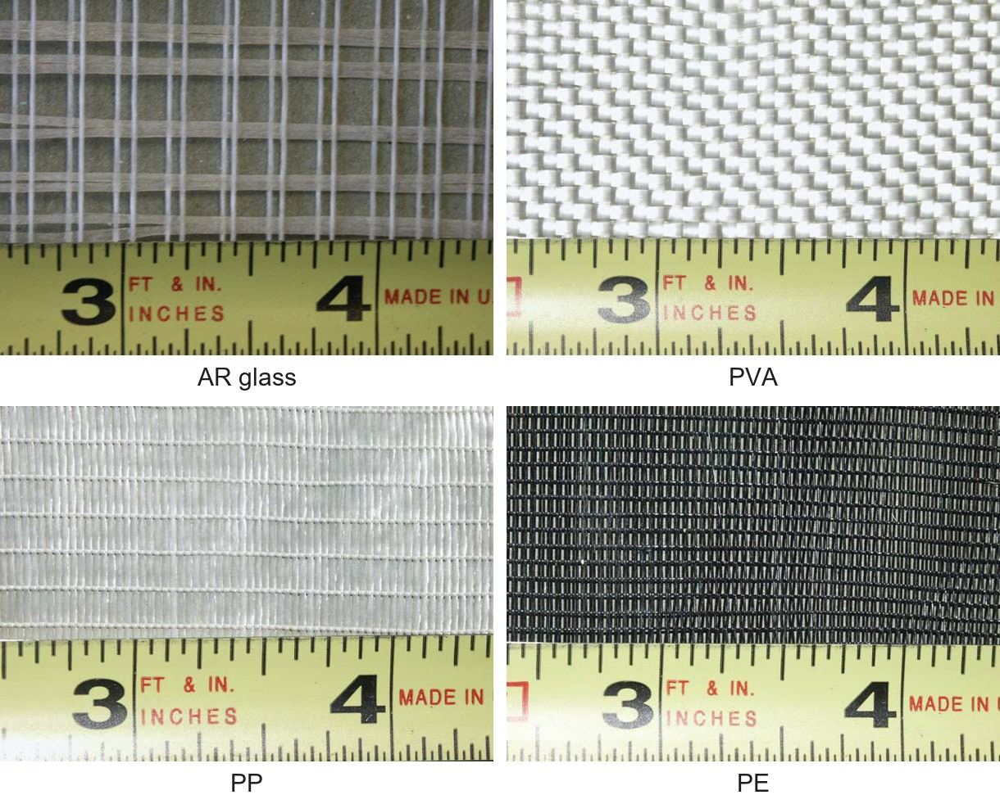

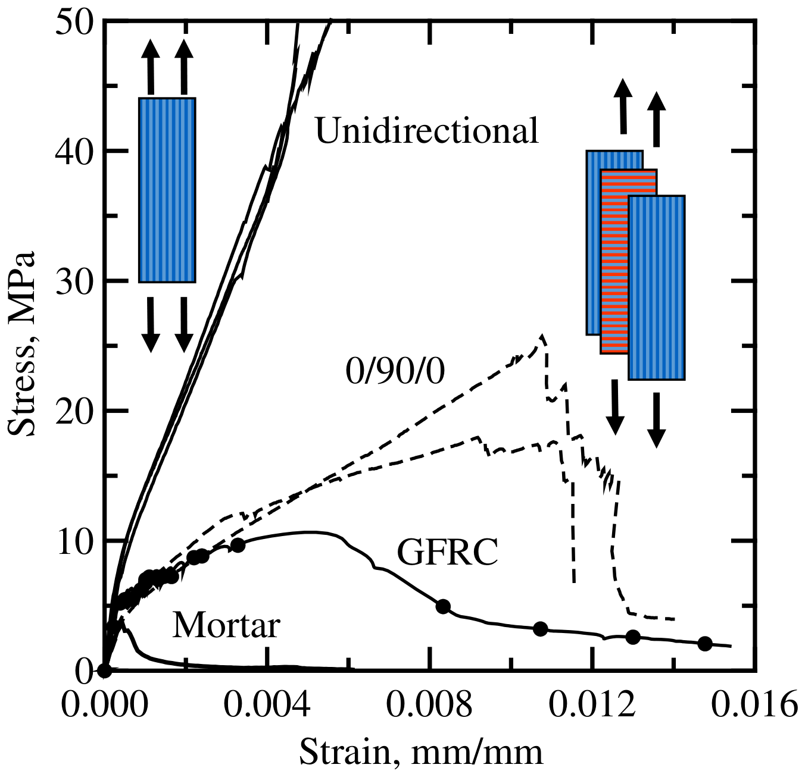
Pultrusion process
The main advantage of fabrics as reinforcements in cement-based composites is the enhancement of mechanical behavior, especially when low modulus low-cost yarns are used. In addition, modern textile technology offers a wide variety of fabrics with great flexibility in fabric design and control of yarn geometry and orientation. This flexibility allows the engineering of composite performance for various cement products. Practical use of textile-cement composites requires an industrial cost-effective production process. The pultrusion process is a natural candidate for this purpose, as it is based on a relatively simple set up using low-cost equipment while assuring uniform production and good control of laminate alignment. In this process, continuous reinforcements are impregnated in the fresh matrix and then pulled through a set of rotating cylinders, which apply pressure, remove the excess matrix, and form fabric composite laminates. It has been demonstrated in numerous circumstances that the production method can have a substantial impact on the properties of the final product, hence our effort is to understand and control these parameters for optimum materials development.
The challenges of this research are 1) development of pultrusion processing techniques for textile reinforced cement composites, 2) development of cement mixtures with appropriate rheology for the pultrusion process, and optimal mechanical performance, 3) optimization of textile materials and structure for various product requirements, and 4) development of a series of typical products that can be implemented and used in the current building technology, rehabilitation, and durability and seismic strengthening.

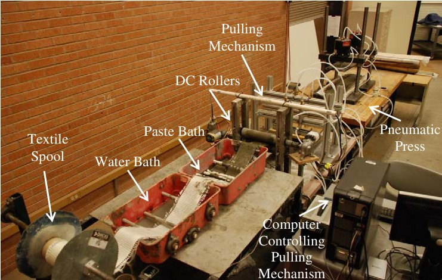
Bond between fabric and matrix
The cement paste penetrates the openings of the fabric and hardens around the crossing yarns, so each yarn is anchored mechanically at its junctions. In a pullout test on a single polypropylene (PP) yarn, the yarn embedded as part of a fabric carried a higher load than the same yarn embedded alone. This anchorage is the primary advantage of low-cost polymer fabrics, whose modulus is low. The paste matters as well, because pultruded alkali-resistant (AR) glass fabric composites reached a higher pullout load when the paste contained fly ash.

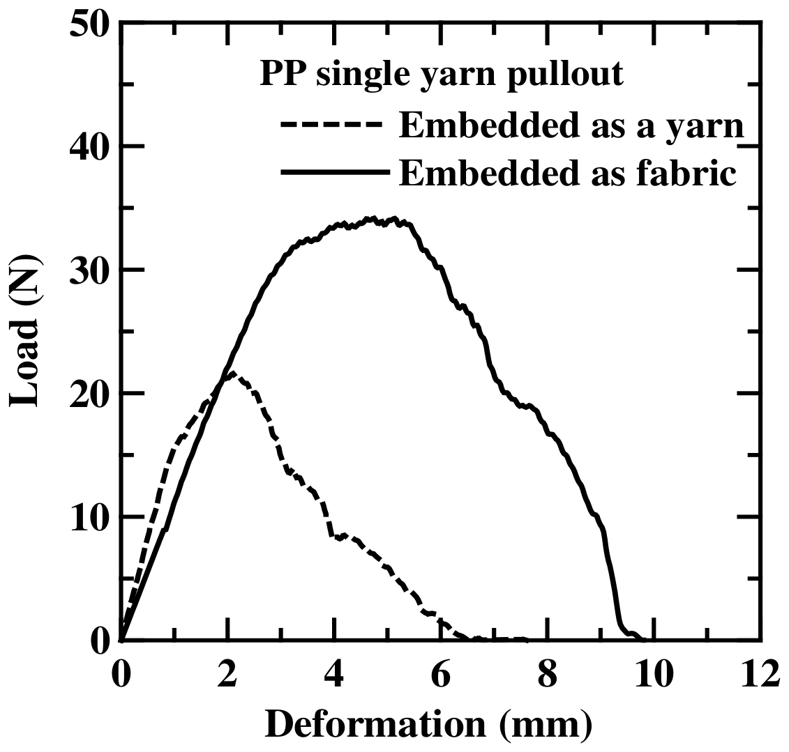

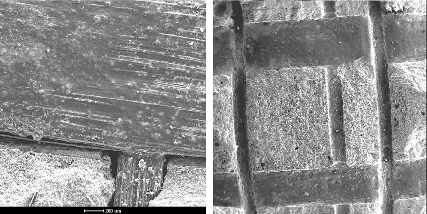
Tensile response and distributed cracking
A TRC specimen pulled in tension responds elastically until the matrix cracks. The fabric bridges the crack and transfers load back into the matrix, so the stress keeps rising and further fine cracks form in parallel. This distributed cracking produces strain hardening, the continued rise of stress with strain after first cracking.
With polypropylene textiles at volume fractions of 1 to 4%, first cracking occurred at 2 to 7 MPa, with ultimate strength up to 25 MPa and strain capacity up to 6%. In pultruded PP composites, doubling the textile content from 4% to 8% raised the tensile strength by 44%, the stiffness after cracking by 78% and the toughness by 47%.

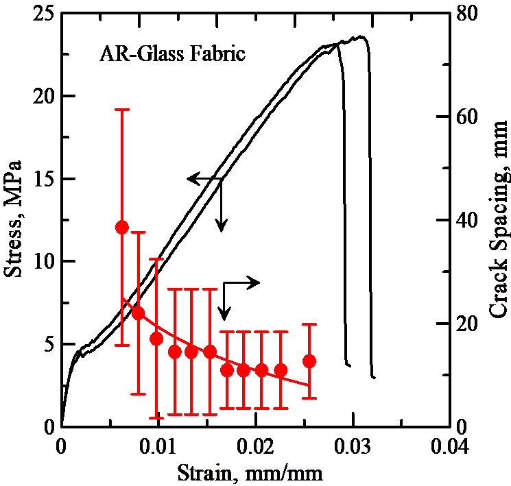

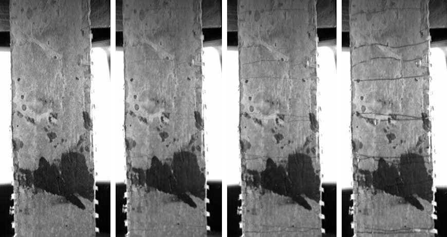

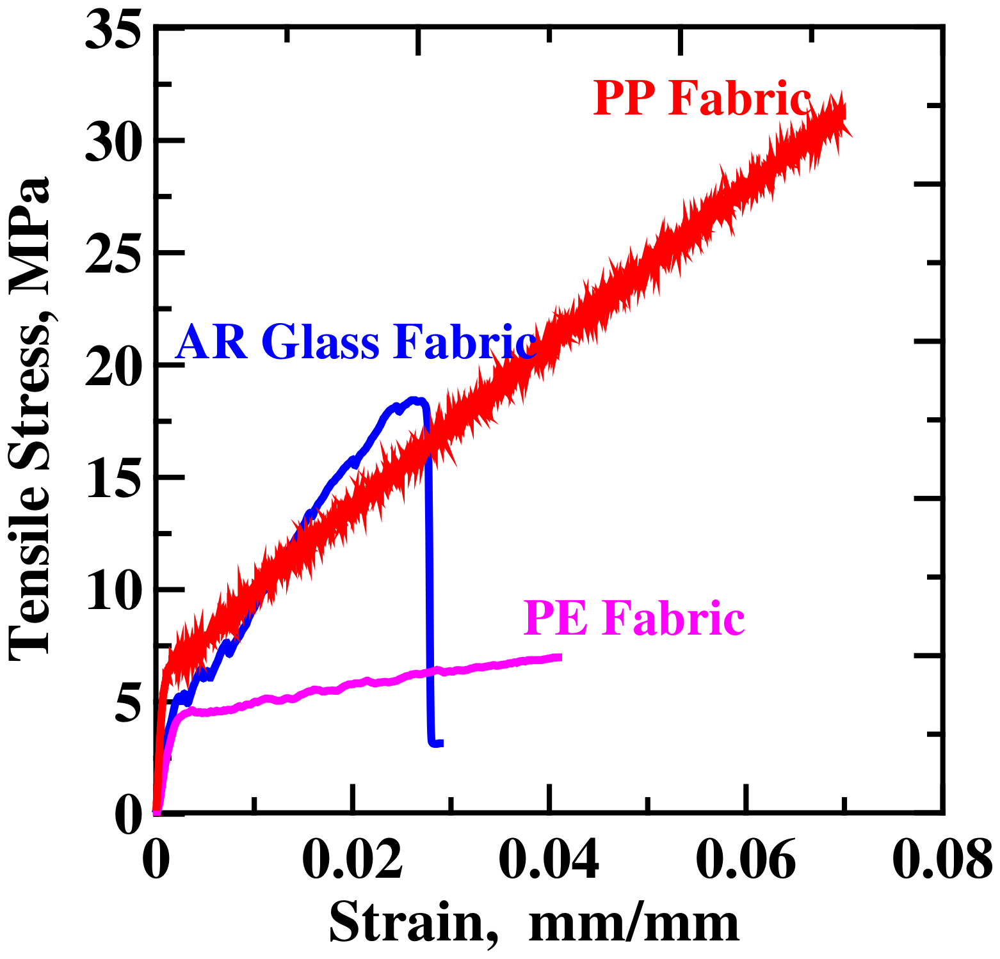
Structural shapes, sandwich panels and repair
Using the developed methodology, various shapes and cross-sections have been developed with potential for the new structural systems. These include rectangular tubes, sandwich panels with lightweight aggregate core, W sections, channels, and angles, thin panels, honeycomb elements, and pipes. The primary component of this new construction technology is the development of a family of cement products as thin elements (about 10 mm thickness), which can then be formed into wall panels, structural shapes, exterior siding, roofing tiles, truss elements, and pressure pipes.
Full-size W, channel and angle sections are made on a computer-controlled pultrusion line and are intended to compete with wood and light gage steel. In sandwich panels, each skin is two layers of AR glass textile in a cement binder over an aerated concrete core. Such sandwich beams absorbed 3 to 6 times the energy of plain aerated concrete under static loading and as much as 4 to 8 times under impact.
Fabric-cement composites were also studied for repair, on unreinforced masonry walls retrofitted with AR glass fabric composites and on plain concrete beams strengthened with fabric-cement layers.

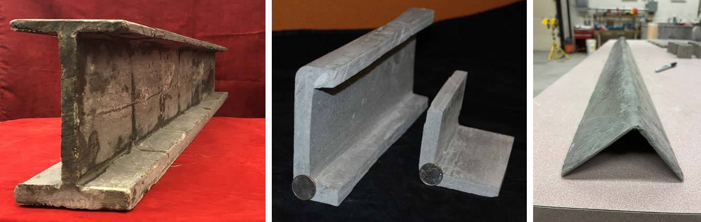

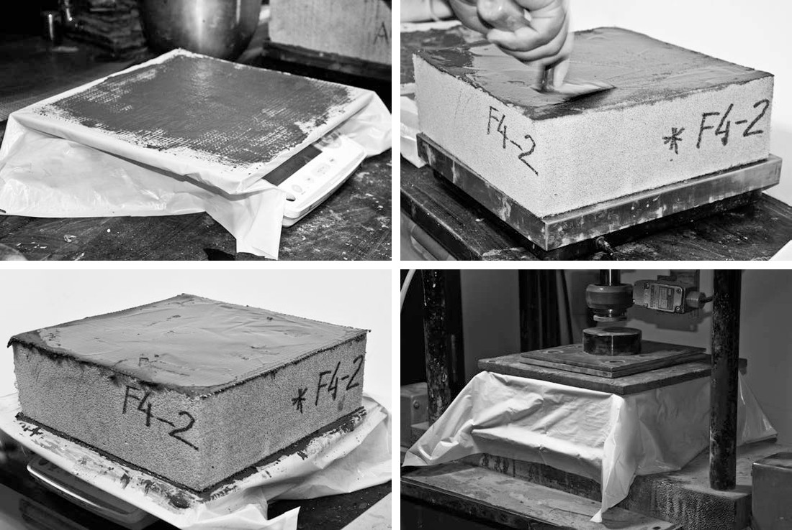

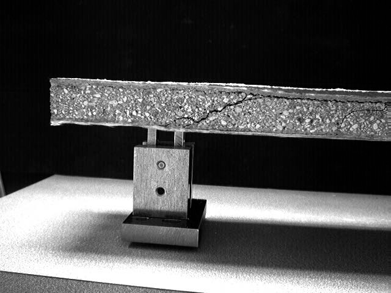
Models for analysis and design
Theoretical models simulating the tensile behavior of cement composites are developed. These models relate the properties of the matrix, aggregate, fiber, fabric, and interface and the damage parameters to the overall mechanical response of the composites. Using analytical models for the pullout response, the effect of toughening is characterized. Damage parameters are defined using cracking parameters such as density, spacing, and crack width. Models are verified using finite element approach, finite difference approach, fracture mechanics, and composite laminate theory.
For design, the cracked composite is treated as one homogenized material with a piecewise-linear stress-strain law. Closed-form solutions for the moment-curvature response, the bending moment a section carries at each curvature, follow from that law for rectangular, W, T and channel sections. They give the deflection of a member under load for checks against a serviceability limit. The HRC Designer software fits the same tension law to the measured load-deflection curve of a TRC plate in flexure.

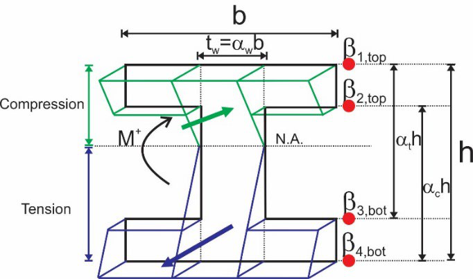

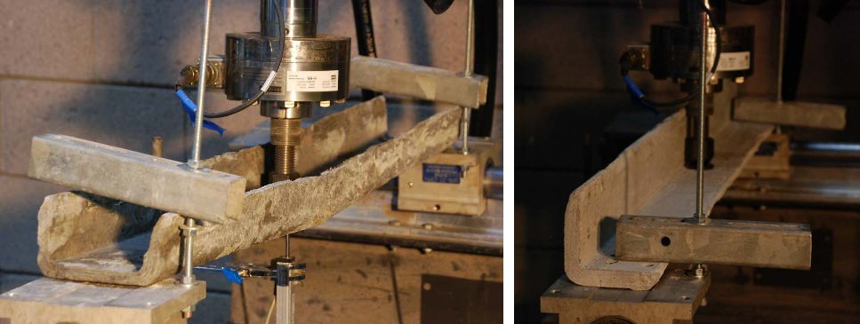
Papers
All publicationsProperties of Fabric–Cement Composites made by Pultrusion
Materials and Structures, 39, 787-797
Pullout-Slip Response of Fabrics Embedded in a Cement Paste Matrix
Journal of Materials in Civil Engineering, ASCE, 19, 718
Distributed cracking and stiffness degradation in fabric-cement composites
Materials and Structures, 39 (3), 317-331
Analytical simulation of tensile response of fabric reinforced cement based composites
Cement and Concrete Composites, 28, 77-89
Flexural impact response of textile-reinforced aerated concrete sandwich panels
Materials & Design, 86, 187-197
Development of Polymeric Textile Reinforced Concrete Structural Members
Fibre Reinforced Concrete: Improvements and Innovations II, 845-854
Distributed cracking mechanisms in micro-polypropylene based textile reinforced concrete
Materials and Structures, 56
Analytical moment-curvature solutions for generalized textile-reinforced concrete sections
Engineering Structures, 276, 115317
Software for Mechanical Characterization and Design of Textile-Reinforced Concrete in Flexure
RILEM Bookseries, 625-632
Test footage
All videosCarbon fiber bundle under tension
High-magnification footage of filaments failing progressively across a carbon fiber bundle.
Presentations
- A Vision for Textile Reinforced Concrete Structural Sections PDF
- TC 292-MCC: Mechanical Characterization and Structural Design of Textile Reinforced Concrete PDF
- Development Of TRC Plates and Angles for Compression Applications: How Thin Could we Make Them? PDF
- Advances in the Textile Reinforced Concrete Structural Design and Applications PDF
- Laminate modelling (paper ID 319) PDF